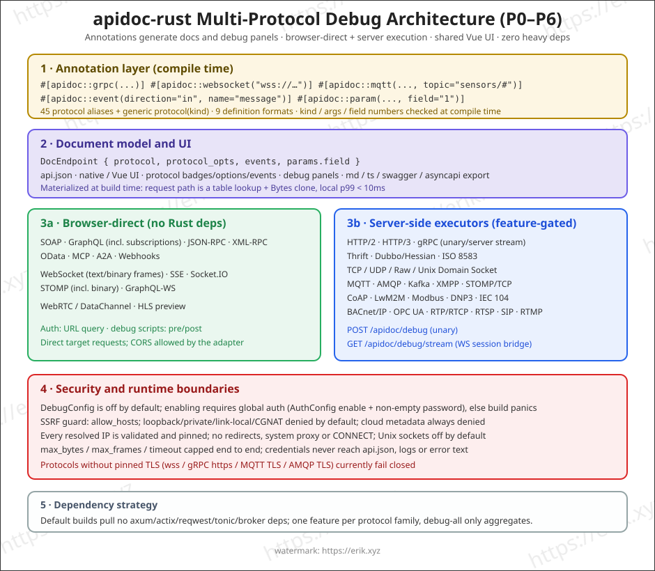
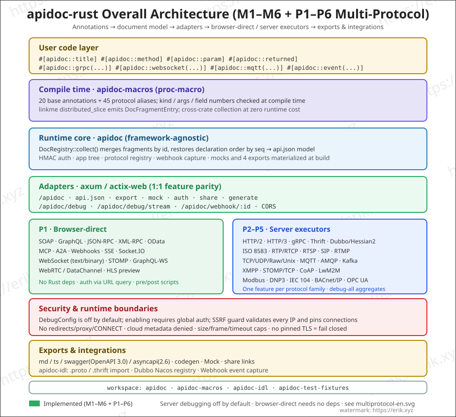
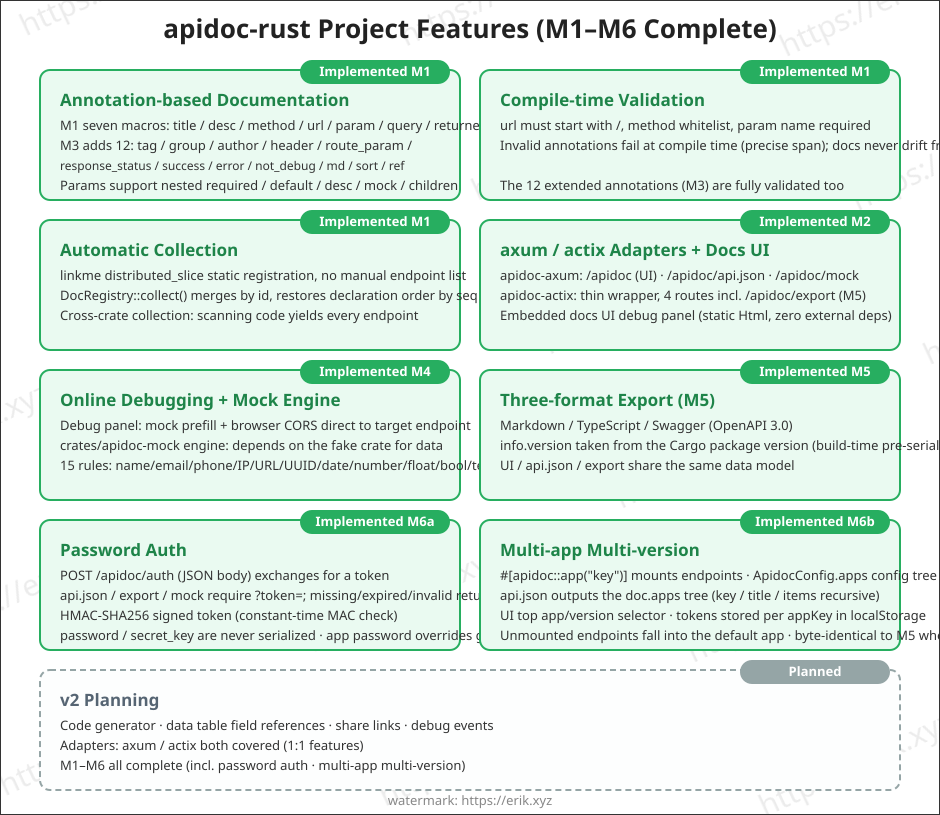
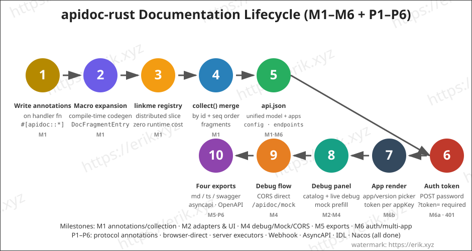

On this page
- When to use it
- Installation and dependencies
- Core model and collection
- Writing annotations
- Macro reference
- Compile-time rules
- Collection, output and references
- axum setup
- actix-web setup
- Mock and live debugging
- Protocol annotations and debugging
- UIC-1 unified endpoints
- Auth
- Apps and versions
- Tables and document cache
- Sharing, exports and code generation
- Common scenarios
- REST CRUD
- Pagination and shared fields
- Login and auth
- Multiple versions
- Front-end types and backend skeletons
- Table-driven docs
- Rules and troubleshooting
- Visual overview
- Reference
The Rust edition declares documentation with proc macros on handlers. Fragments are statically registered at compile time and aggregated at zero runtime cost. It supports axum and actix-web, a native web UI or the shared Vue UI via ui: UiMode::Vue + ui_path, 45 protocol annotations with browser/server debugging, 9 definition formats, Mock, auth, apps/versions, AsyncAPI/Swagger/TS exports, sharing and code generation. It fits Rust services that want docs to stay strict with the code and fail early at compile time.

When to use it
- axum or actix-web services, with thin adapters for additional frameworks over time.
- Teams that want docs generated at compile time so code and docs cannot drift.
- Projects that need HTTP and MQTT/gRPC/WebSocket protocol debugging, 9 definition formats, Mock, HMAC auth, apps/versions and Markdown/TypeScript/Swagger/AsyncAPI exports.
- Rust 1.82+ projects that accept proc macros plus
linkmeregistration.
Installation and dependencies
[dependencies]
apidoc-rust = "2.2"
serde_json = "1"
linkme = "0.3"
Rust 1.82+ is required. The published package is apidoc-rust, the library name is apidoc, and apidoc-macros is re-exported. The default build pulls no web framework; enable a feature per framework:
features = ["axum"]: axum adapter, Mock enabled implicitly.features = ["actix"]: actix-web adapter, feature parity with axum.debug-*: opt into server executors by protocol family (debug-grpc,debug-thrift,debug-dubbo,debug-iso8583,debug-mqtt,debug-amqp,debug-kafka,debug-xmpp,debug-coap,debug-industrial,debug-http,debug-http3,debug-media,debug-sockets);debug-allaggregates them.features = ["mock"]: Mock engine only, no framework.
linkme must be a direct dependency because generated registration code references it. A crate that only registers docs and uses nothing else from the crate must be linked, not merely built; calling any exported item or registering a handler forces the link.
Core model and collection
| Type | Purpose |
|---|---|
DocRegistry |
Collects macro fragments, merges endpoints and resolves ref / table. |
ApidocConfig |
Project config: title, description, auth, app tree, version, tables, cache, codegen. |
DocEndpoint |
One endpoint: title, desc, url, method, headers, params, querys, returned, group, tags and more. |
DocParam |
Field: name, type, required, default, desc, mock, children. |
AppConfig |
App/version node: key, title, items, password. |
TableDef / TableField |
Table metadata for #[apidoc::table]. |
CacheConfig |
In-process Mock cache with a TTL; 0 means permanent. |
Build the full document:
use apidoc::{ApidocConfig, DocRegistry};
fn main() {
let doc = DocRegistry::collect_doc(ApidocConfig {
title: "My API".to_string(),
description: Some("Internal API".to_string()),
..Default::default()
});
println!("{}", serde_json::to_string_pretty(&doc).unwrap());
}
DocRegistry::collect() returns only the endpoint list. collect_doc() also builds the app/version tree. Without app or apps, the output stays compatible with older versions.
Writing annotations
Attach attribute macros to a handler:
use apidoc::*;
#[apidoc::title("Get user")]
#[apidoc::desc("Fetch a user by ID")]
#[apidoc::url("/api/user/info")]
#[apidoc::method("GET")]
#[apidoc::param(name = "user_id", ty = "int", required, desc = "User ID", mock = "1")]
#[apidoc::query(name = "lang", ty = "string", desc = "Language", default = "en-US")]
#[apidoc::returned(
name = "data",
ty = "object",
desc = "User data",
children = [
{ name = "id", ty = "int", required, desc = "User ID" },
{ name = "name", ty = "string", required, desc = "User name", mock = "erik" },
]
)]
fn get_user_info() -> String {
unimplemented!()
}
Macro reference
| Macro | Arguments / purpose |
|---|---|
title / desc |
Endpoint title and description. |
method |
HTTP method, validated against a whitelist at compile time. |
url |
Endpoint URL; must start with /. |
param / query / returned |
Body, query and response fields; see the field table. |
header |
name and desc; name must not be empty. |
route_param |
Path parameter; same fields as param. |
tag |
Tag; can be repeated and appends. |
group |
Group; the UI prefers it. |
author |
Author. |
response_status |
One or more status codes, deduplicated. |
success / error |
code and example response samples. |
not_debug |
Flag; the debug panel can filter it. |
md |
Markdown note, rendered as-is. |
sort |
Group sort weight, may be negative. |
r#ref |
Reuse another endpoint's returned fields by global function name. |
app |
Attach to an ApidocConfig.apps key. |
table |
Flatten fields from ApidocConfig.tables into returned. |
protocol / websocket / grpc / mqtt / ... |
45 protocol annotation aliases; positional argument is target, equivalent to protocol(kind, ...). |
event |
direction / name; declares a streaming protocol message. |
Field arguments for param, query and returned:
| Argument | Description |
|---|---|
name |
Field name, required. |
ty |
Type such as string, int, object or array. |
required |
Required flag; written without a value. |
default |
Default value. |
desc |
Description. |
mock |
Mock value or a fake:xxx rule. |
children |
Nested fields, written as { ... } entries. |
Compile-time rules
urlmust start with/;methodmust be one ofGET,POST,PUT,DELETE,PATCH,HEAD,OPTIONS.headermust have a non-emptyname;group,author,ref,appandtablemust not be empty.not_debugtakes no arguments;sorttakes an integer.- Parameter names are required;
childrenis parsed recursively. - Errors are reported at compile time with precise spans, not deferred to runtime.
Collection, output and references
let doc = DocRegistry::collect_doc(ApidocConfig {
title: "My API".to_string(),
apps: vec![AppConfig {
key: "demo".to_string(),
title: "Demo".to_string(),
items: vec![],
password: None,
}],
..Default::default()
});
ref reuses another endpoint's returned fields:
#[apidoc::r#ref("get_user_list")]
fn get_user_detail() -> String { unimplemented!() }
ref is a Rust keyword, so the attribute must use the raw identifier form: #[apidoc::r#ref(...)]. The target is a function name matched globally. The referencing endpoint's own returned is replaced by the target; collect prints a warning to stderr when that happens. table and ref can be combined; table fields are appended after ref resolution.
axum setup
[dependencies]
apidoc-rust = { version = "2.1", features = ["axum"] }
use apidoc::axum::{apidoc_routes, cors_layer, CorsConfig};
use apidoc::ApidocConfig;
use axum::{routing::get, Router};
let app = Router::new()
.route("/users", get(list_users))
.merge(apidoc_routes(ApidocConfig {
title: "My API".to_string(),
..Default::default()
}))
.layer(cors_layer(CorsConfig {
allow_origins: vec!["https://admin.example.com".to_string()],
}));
Mounted routes:
| Path | Purpose |
|---|---|
/apidoc |
Documentation UI (native, or the shared Vue UI with ui: UiMode::Vue). |
/apidoc/api.json |
Document data. |
/apidoc/mock |
Mock response. |
/apidoc/export |
Exports: Markdown / TypeScript / Swagger. |
/apidoc/share |
Share link. |
/apidoc/generate?template=api.ts |
Code generation. |
/apidoc/auth |
Exchange password for a token. |
/apidoc/pet.svg |
Project pet icon. |
Call cors_layer on the final router so business routes can also be called from the browser. CorsConfig { allow_origins: vec![] } or ["*"] allows the literal * without credentials; a configured allowlist matches the Origin exactly.
actix-web setup
[dependencies]
apidoc-rust = { version = "2.1", features = ["actix"] }
use actix_web::{App, HttpServer};
use apidoc::actix::{apidoc_routes, cors_layer, CorsConfig};
use apidoc::ApidocConfig;
#[actix_web::main]
async fn main() -> std::io::Result<()> {
HttpServer::new(|| {
App::new()
.service(apidoc_routes(ApidocConfig {
title: "My API".to_string(),
..Default::default()
}))
.wrap(cors_layer(CorsConfig::default()))
})
.bind("127.0.0.1:8080")?
.run()
.await
}
The actix adapter has feature parity with axum: routing, Mock, exports and auth behave the same.
Mock and live debugging
Mock precedence:
#[apidoc::param(name = "email", ty = "string", desc = "Email", mock = "fake:email")]
#[apidoc::param(name = "status", ty = "string", desc = "Status", mock = "1")]
#[apidoc::param(name = "name", ty = "string", desc = "Name")]
fn create_user() -> String { unimplemented!() }
fake:xxxuses 15 fake rules:name,company,email,phone,url,ip,city,country,text,number,int,float,bool,uuid,date.- A non-empty
mockis emitted as-is, such as"1". - Without a mock, values are generated by
ty: int →"1", float →"0.5", bool →"true", object →"{}", string →"string"; arrays get two items. childrenrecurses.not_debugendpoints are hidden by default in the debug panel and can be shown with a toggle.
Live debugging calls the target directly from the browser, so the adapter's cors_layer must allow the origin. The v2 debug panel supports pre/post scripts:
// Before: mutate ctx.url / method / headers / body
ctx.headers['X-Token'] = localStorage.getItem('token') || '';
// After: ctx = { status, ms, text, url, method, ep }
return 'HTTP ' + ctx.status + ' · ' + ctx.ms + 'ms\n' + ctx.text;
Script errors are shown in the result area and do not abort the request.
Protocol annotations and debugging

Each protocol has its own annotation; the positional argument is target:
#[apidoc::websocket("wss://example.com/ws")]
#[apidoc::grpc(target = "http://localhost:50051", service = "helloworld.Greeter", method = "SayHello")]
#[apidoc::mqtt("mqtt://broker:1883", topic = "sensors/#")]
#[apidoc::event(direction = "in", name = "message")]
#[apidoc::param(name = "payload", ty = "json", field = "1")]
fn stream() {}
The generic #[apidoc::protocol("kind", ...)] form is equivalent. Full coverage:
- Browser-direct: SOAP/GraphQL, JSON-RPC/XML-RPC, OData, MCP/A2A, Webhooks, WebSocket, SSE, Socket.IO, STOMP, WebRTC and HLS.
- Server-side: gRPC, Thrift, Dubbo/Hessian, ISO 8583, TCP/UDP/Unix Socket, MQTT, AMQP, Kafka, XMPP, CoAP, Modbus, DNP3, IEC 104, BACnet, OPC UA, HTTP/2, HTTP/3, RTP/RTCP, RTSP, SIP and RTMP.
- Enhancements: inbound webhook capture, AsyncAPI 2.6 export, Nacos Dubbo and event Mock examples;
#[apidoc::definition]+definition_rootsparses 9 formats: proto, WSDL/XSD, GraphQL, OpenAPI, AsyncAPI, JSON Schema, JSON-RPC, XML-RPC and OData EDMX.
Server execution is off by default: DebugConfig { enable_server_side: true } requires global auth. Targets pass an SSRF guard first (allowlist, loopback/private/link-local/CGNAT denied by default, cloud metadata always denied, DNS results checked per IP and pinned, redirects/proxies/CONNECT disabled) and are bounded by max_bytes / max_frames / timeout. Protocols without pinned TLS support (wss, gRPC https, MQTT/AMQP TLS) fail closed.
api.json, all exports, code templates and mock responses are materialized when the router is built; tests/latency.rs verifies local routes at p99 < 10 ms, excluding the debug target's network time.
UIC-1 unified endpoints
The /ui/v1 contract is fully implemented in Rust, so apidoc-ui can discover Rust and gate entries from capabilities:
- Read endpoints, docs,
verifyAuth, debug start/poll/stop; native/apidoc/api.jsonand/apidoc/debugremain available. - The server relay exposes the compiled feature subset (HTTP/2, gRPC, Thrift, Dubbo, MQTT, Kafka and others); uncompiled protocols are absent from capabilities.
- Management: share record CRUD/login, build-time cache management, generators and templates,
exportAllData, AsyncAPI export. - Definitions:
#[apidoc::definition]+definition_rootssupport 9 formats, returned to the unified UI over UIC-1. cache.mode:"build"means docs are materialized at build time, so the UI explains there is no runtime cache to clear. Share actions areactions:false.- Bearer tokens cover global, app and share scopes; SSRF guards, limits and feature gates remain on the native execution path.
ui: UiMode::Vue+ui_pathcan serve thedist/uic1-uibuild shared with PHP and Go; the library still defaults to the native UI.
Released capabilities follow main and Releases. Rust fully implements UIC-1, 9 definition formats and native/Vue UI.
Auth
use apidoc::auth::AuthConfig;
let config = ApidocConfig {
title: "My API".to_string(),
auth: Some(AuthConfig {
enable: true,
password: "your-password".to_string(),
secret_key: "your-secret-key".to_string(),
expire: 86400,
}),
..Default::default()
};
Flow:
- The client calls
POST /apidoc/authwith JSON{"password":"...","appKey":"<key>"}and receives{"token":"..."}. A wrong password returns 401; an invalid body returns 400. - Data routes
/apidoc/api.json,/apidoc/exportand/apidoc/mockrequire?token=xxx, plus&appKey=when selecting an app. - The token is
base64url(payload).base64url(HMAC-SHA256(payload))with an expiry in the payload; changing the password invalidates old tokens. passwordandsecret_keyare never serialized. App passwords take precedence over the global password; empty passwords fail closed.- Repeated login failures use exponential backoff. Responses with credentials or tokens use
Cache-Control: no-store.
If secret_key is omitted, a process-local random key is used. Tokens die on restart. Multi-instance deployments must set a fixed shared secret_key.
Apps and versions
#[apidoc::app("demo")]
#[apidoc::title("Get user")]
fn get_user_info() -> String { unimplemented!() }
let apps = vec![AppConfig {
key: "demo".to_string(),
title: "Demo app".to_string(),
items: vec![AppConfig {
key: "v1".to_string(),
title: "v1".to_string(),
items: vec![],
password: None,
}],
password: None,
}];
- An
appkey missing from the config produces a stderr warning and falls back to the default app. - The UI shows an app/version selector; tokens are stored per appKey.
- An app with a
passworduses only its app token; the app password takes precedence over the global password.
Tables and document cache
ApidocConfig {
tables: vec![TableDef {
key: "user".into(),
title: "User table".into(),
fields: vec![
TableField { name: "id".into(), ty: "int".into(), required: true, desc: Some("User ID".into()), ..Default::default() },
TableField { name: "name".into(), ty: "string".into(), mock: Some("erik".into()), ..Default::default() },
],
}],
cache: Some(CacheConfig { enable: true, ttl: 60 }),
..Default::default()
}
#[apidoc::table("user")] flattens the configured fields into returned. Missing keys only warn. cache.ttl controls the in-process /apidoc/mock cache; 0 means permanent. api.json and exports are materialized when the router is built and do not use this cache.
Sharing, exports and code generation
GET /apidoc/share?app=api&url=/api/user/info&method=GET&base=https://example.com
GET /apidoc/export?format=md
GET /apidoc/export?format=ts
GET /apidoc/export?format=swagger
GET /apidoc/export?format=asyncapi
GET /apidoc/generate?template=api.ts
sharereturns a deep link; when auth is enabled it includes a token so the link opens without a password.exportsupports Markdown, TypeScript, Swagger/OpenAPI 3.0.0 and AsyncAPI 2.6; an unknown format returns 400.generateshipsapi.ts,handler.rsandschema.sqltemplates. A custom template with the same name overrides the built-in one. Templates support{{variable}}and{{#each ...}}, including endpoints, tables, field values and SQL fragment variables.
Common scenarios
REST CRUD
Attach title, url, method, params and response fields to each handler, then group with group / tag. Compile-time checks catch bad URLs, methods and parameter names before commit.
Pagination and shared fields
Use ref to reuse the list endpoint's returned fields, or extract pagination params into a shared definition. table is useful when the response mirrors a configured database table.
Login and auth
With AuthConfig, the UI shows a password overlay. Use app passwords to separate teams. Multi-instance deployments need a fixed secret_key.
Multiple versions
Build the tree with AppConfig.items and attach endpoints with #[apidoc::app("key")]. The UI switches apps and versions.
Front-end types and backend skeletons
export?format=ts hands types to the front-end. generate?template=handler.rs / schema.sql produces a backend skeleton and table SQL.
Table-driven docs
Rust does not connect to the database. Define tables and fields in ApidocConfig.tables, then reference them with table so docs and configuration stay aligned.
Rules and troubleshooting
| Problem | Check |
|---|---|
Compile error on apidoc::url |
Does the URL start with /? Is the method in the whitelist? |
Compile error around linkme |
Is linkme a direct dependency? Is the doc-only crate actually linked? |
| Endpoint is missing | Is the macro on a handler function? Is the crate linked? Did you call collect_doc? |
ref does not work |
Is it written as #[apidoc::r#ref("fn_name")]? Is the target function name correct? |
app falls back to default |
Is the key present in ApidocConfig.apps? |
| Tokens die after restart | Set a fixed secret_key. |
| Debug CORS fails | Is cors_layer mounted? Does allow_origins include the page origin? |
| Protocol debugging is unavailable | Is DebugConfig.enable_server_side enabled with auth? Is the matching debug-* feature compiled? Did the SSRF guard or unsupported TLS reject the target? |
| AsyncAPI export fails | Does the endpoint declare a protocol and event messages? Is export?format=asyncapi enabled? |
| Page is stale | Doc artifacts are materialized when the router is built; restart or rebuild. |
Visual overview



Reference
- apidoc-rust README
- apidoc-rust Releases
- crates.io apidoc-rust
- Architecture, features and lifecycle diagrams are shown above and in README
docs/images/.
Install
apidoc-rust = "2.2"Other language guides
Need help?
Open a GitHub Issue, or read the repository README first.